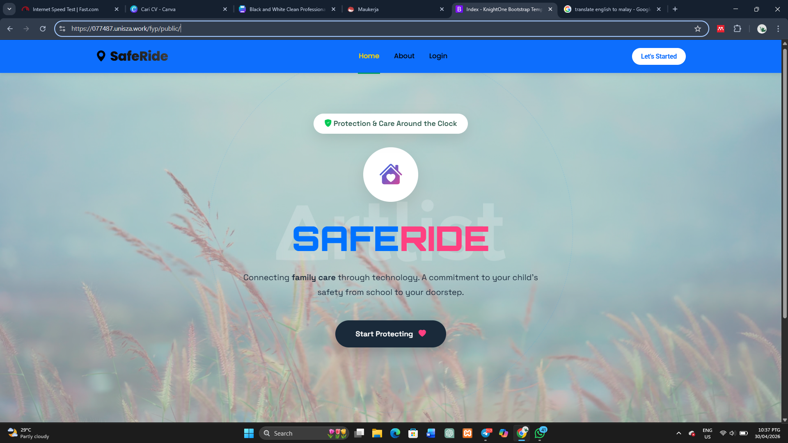
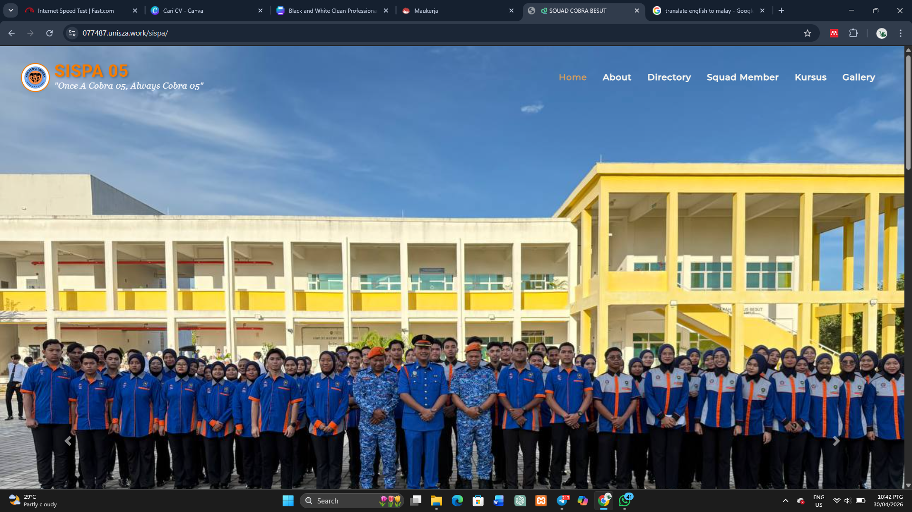

a) Career Exploration: Software Developer (Security-focused)
Job Responsibilities:
Responsible for designing and developing web applications and IoT systems that prioritize data security. This includes implementing encryption, managing secure user authentication, and ensuring data integrity during network transmission.
Required Skills:
Requires expertise in secure coding, understanding of OWASP vulnerabilities, secure MySQL database management, and the ability to securely configure IoT devices such as the ESP32.
Relevance to Modern Cybersecurity:
In the era of IoT and cloud applications, most cyberattacks target vulnerabilities at the software layer. As a security-focused developer, my role is to build systems with "Security by Design," mitigating intrusion risks before they occur.
b) Personal Skills Assessment
i. Identification
Technical Skills:
- Programming: Laravel 12, CodeIgniter 4, Flutter, Node.js
- Tools: Android Studio, Figma, MySQL, Arduino IDE
- Networking: Network Configuration & Troubleshooting
Soft Skills:
- Leadership: Residential Block Head (2 Sessions)
- Discipline: Member of Civil Defense Student Corps (SISPA)
- Teamwork: Digital project collaboration (SULAM)
ii. Comparison
"My technical skills in Laravel and IoT already meet the basic industry requirements for system development. However, for a security-focused career, I need to enhance my knowledge in secure code auditing and network threat management to align with professional cybersecurity standards."
c) Career Development Plan
Certifications & Tools
Target Certs: CompTIA Security+, CCNA.
Learning Tools: Linux (Kali), Python.
Short-term Goal (2 Years)
Successfully complete Internship (Sept 2026) and begin a career as a Junior Web Developer with a focus on API Security.
Long-term Goal (5 Years)
Become a Senior Security-focused Developer or a Security Consultant specialized in IoT and Web integration.
d) Evidence of Learning
Project: SafeRide (FYP)



Use arrows to view more screenshots
Development of a real-time student tracking system using the A7670G module and Laravel 12.
View ProjectProject: SISPA Digital Directory



Use arrows to view more screenshots
Centralized information platform using CI4 for the digitalization of organizational records.
View Projecte) Personal Reflection
Company Choice: VeecoTech Solutions
Why this company? As the leading national cybersecurity agency, I want to contribute my talents toward developing systems that support Malaysia's digital sovereignty.
Value & Why hire me? With a 3.70 CGPA and the discipline gained from SISPA, I offer a combination of academic excellence and mental resilience. My expertise in IoT aligns perfectly with national smart device security initiatives.
Strengths:
High attention to detail in system development and proven leadership skills as a residential block head.
Weaknesses:
An introverted personality, which I overcome through active leadership roles and involvement in SISPA activities.